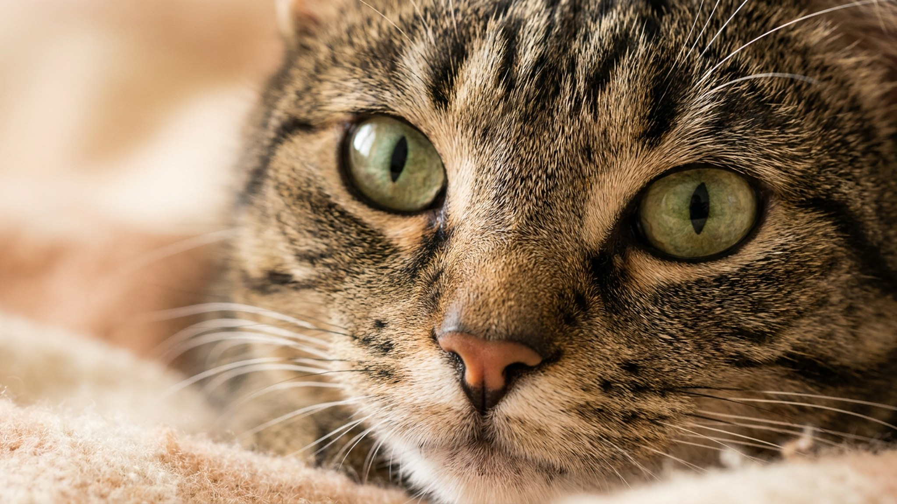

Кошка вдруг обхватывает вашу руку всеми передними лапами, прижимает к себе — и начинает яростно молотить задними. Кинологи и фелинологи зовут это «кроличьим ударом» (bunny kick). Это не приступ злобы и не сбой: движение записано в кошке от рождения. Разберём, откуда оно взялось, как отличить игру от настоящей агрессии и почему за него нельзя подставлять руку.
🐾 У вашей кошки так же?
Расскажите в AnimaLife, как ведёт себя ваш питомец, — приложение объяснит причину и даст пошаговый план. Бесплатно, без записи к специалисту.
Разобрать свой случай → Разобрать в MAX →
У вас iPhone? AnimaLife есть в App Store
Это охотничий приём. В природе кошка добывает добычу крупнее мыши — например, кролика (отсюда и название). Передними лапами и зубами она удерживает жертву, а мощными задними «пробивает» ей живот, обездвиживая. Мышцы задних лап у кошки — самые сильные, те же, что бросают её в прыжок. Так что молотящие задние лапы — это не «психует», а включился древний сценарий охоты на «крупную дичь».
Один и тот же удар может быть весёлой игрой или сигналом «отстань» — важно читать всё тело, а не только лапы.
Самая частая ошибка — «бороться» с котёнком голой рукой или шевелить пальцами под одеялом. Для кошки рука превращается в добычу, и «кроличий удар» с укусами закрепляется как норма игры. Милый котёнок вырастает в кошку, которая всерьёз атакует руки — и отучить взрослого сложнее, чем не приучать. Кожа рук тонкая, а задние лапы бьют сильно: остаются царапины.
🐾 Хотите понять, что кошка говорит вам?
Опишите ситуацию или пришлите видео в AnimaLife — AI разберёт поведение вашего питомца и подскажет, что делать. Бесплатно, ответ за минуту.
Разобрать поведение → Разобрать в MAX →
У вас iPhone? AnimaLife есть в App Store
🐾 Понравился разбор?
Подпишитесь на канал — каждый день разбираем по одному тревожному симптому у кошек и собак: что в пределах нормы, а когда пора к врачу. Подпишитесь, чтобы не пропустить разбор, который может спасти здоровье вашего питомца.
Кошке нужен «легальный» объект для этого приёма — тогда лапы и зубы достанутся ему, а не вам.
«Кроличий удар» сам по себе — здоровое, нормальное кошачье поведение. Задача хозяина простая: направить его на игрушку, а не на собственные руки.